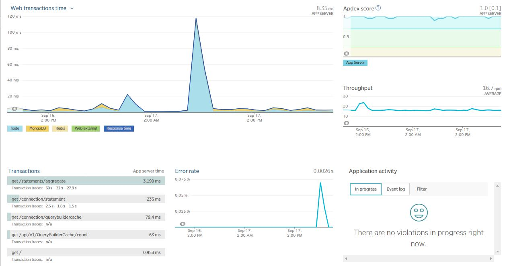

If you have installed Learning Locker using the recommended build script, then the application will come pre-installed onto an instance of the excellent pm2 Node Process Management tool.
Whilst this tool can be used to monitor the running processes from within each server running LL (refer to the documentation), it can also be setup to send performance metrics to the Key Metrics platform (costs may apply).

By default logs are captured by pm2 and stored locally on each instance as defined in the pm2 process file (pm2/all.json.dist). Errors and standard output are separated and can be viewed by running pm2 logs from within your instance. By default they are stored in /var/log/learninglocker/ and are rotated using the pm2-logrotate module.

Learning Locker comes with the ability to push your logs to AWS Cloudwatch. To enable this, configure the relevant part of the .env files:
#######################
# AWS Cloudwatch logs #
# AWS credentials must be configured for Cloudwatch access
# Ref: http://docs.aws.amazon.com/AmazonCloudWatch/latest/logs/iam-identity-based-access-control-cwl.html
#######################
# Enable cloudwatch logs (false*|true)
WINSTON_CLOUDWATCH_ENABLED=
WINSTON_CLOUDWATCH_LOG_GROUP_NAME=
WINSTON_CLOUDWATCH_LOG_STREAM_NAME=
WINSTON_CLOUDWATCH_ACCESS_KEY_ID=
WINSTON_CLOUDWATCH_SECRET_ACCESS_KEY=
WINSTON_CLOUDWATCH_REGION=
Please note that the AWS credentials must have the required permissions to create and push to log streams/groups.

Learning Locker handles all logging via Winston. New “transports” can be added and configured in both the Learning Locker application and xAPI services.
The Learning Locker application is configured to send performance metrics to New Relic. Simply fill in the following in the .env of your application instance
#############
# New Relic #
#############
# New Relic License key
NEW_RELIC_LICENSE_KEY=
# APM name for API
NEWRELIC_API_NAME=
# APM name for UI
NEWRELIC_UI_NAME=
In the xAPI you can also add monitoring.
# New Relic License key
NEW_RELIC_LICENSE_KEY=
# APM name
NEW_RELIC_APP_NAME=

Other Node monitoring solutions are available but would need to be added manually to the script or web server.